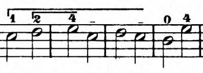
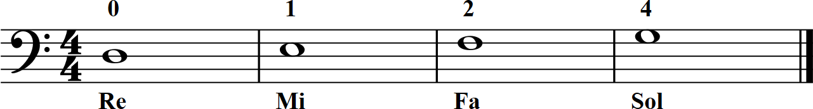
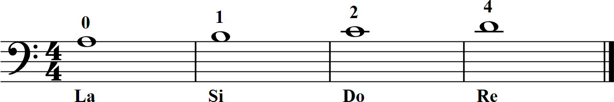
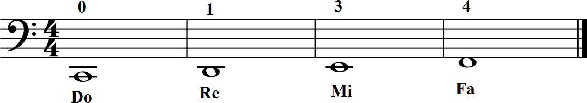

Teoría aplicada - Clase 3
Tempo
Cada vez que nos encontramos con una partitura o con algún ejercicio sabemos que debemos leer toda la información disponible en la partitura.
Además de la clave y del compás usado, también tenemos indicado al comienzo la velocidad, el tempo que debemos usar.
Por ejemplo: Lento.
En este caso debemos tocar lento, lo suficiente para poder pasar el arco de extremo a extremo y mantenerlo bajo nuestro control.
Podríamos asignarle una duración en segundos, por ejemplo que cada negra dure 1.4 segundos y que cada blanca el doble: 2.8 segundos. Pero, ¿cómo hacemos para calcular cuánto está durando cada pulso? habría que usar un cronómetro y mirarlo para que sepamos cuanto tiempo pasó desde el inicio del 1er pulso y saber que al cabo de 4 pulsos debería haber transcurrido 5.6 segundos... planteado así es totalmente impracticable.
Existe un aparato que nos permite controlar la duración de cada pulso usando una escala propia que tiene relación con los pulsos que entran en 1 minuto. Se llama metrónomo
Metrónomo de google
Metrónomo básico online
verás que tiene un número grande que dice: 100 ppm -Cien pulsos o tiempos por minuto- o lo que sería equivalente 1.66 segundos cada pulso, pero ya no hay que andar mirándo un cronómetro, le ponemos Play y escuchamos el pulso e intentamos seguirlo...
Cuando en la partitura dice Lento usemos un pulso de 40 o menos. Para eso vas a necesitar un metrónomo más avanzado, te recomiendo que te bajes en tu teléfono la App SoundCorset que además tiene un afinador.
Otras indicaciones que tal vez encuentres en las primeras lecciones de Dotzauer son:
Andante: ponemos el metrónomo (en adelante lo abreviaremos como M.M. (Metronomo Mäzel, por su inventor)) en un rango aproximado 60-70
Largo: MM = 20 o 30
Dinámicas
En esta imagen, justo debajo de la indicación de compás encontramos la indicación mf (mezzo forte), medio fuerte en italiano, el idioma de la música.
Para evitar bajar una App para medir decibeles, pongámonos de acuerdo y digamos que tocar mf es tocar con el volumen normal, de ese volumen que obtenés cuando te digo que toques apoyando todo el peso del brazo en las cuerdas. Lo que sería un término medio de sonido.
Las otras dinámicas que por ahora vamos a manejar son:
p (piano) suave en italiano, que se obtiene cuando dejamos de ponerle todo el peso del brazo y sostenemos el arco apenas apoyándolo en las cuerdas.
f (forte) fuerte en italiano, que se obtiene cuando nos apoyamos con peso en la cuerda pero le agregamos aún más peso para que suene más fuerte que lo normal. Hay más indicaciones que por el momento no vamos a usar, pero algunas de ellas serían:
ppp, pp, p, mp, mf, f, ff, fff
Símbolos
Aparecen cada tanto unas líneas horizontales que comienzan en una nota y se prolongan por encima de las siguientes. Esas líneas nos dicen que tenemos que dejar apoyado ese dedo mientras se tocan la notas siguientes.

Según la imagen debemos mantener apoyado el dedo 1 por 3 compases, mientras tocamos esas notas y que lo levantamos justo para tocar la primera nota del 4to compás.
El dedo 2 se mantiene apoyado hasta que dejamos de tocar el sol con dedo 4.
Notas de la 2da cuerda
De a poco vamos a tratar de ir memorizando las notas de cada una de las cuerdas del cello. Son muchas pero con la práctica vas a comenzar a reconocerlas.
Notas de la 3era cuerda

Notas de la 1era cuerda
Notas de la 4ta cuerda
Ejercicios